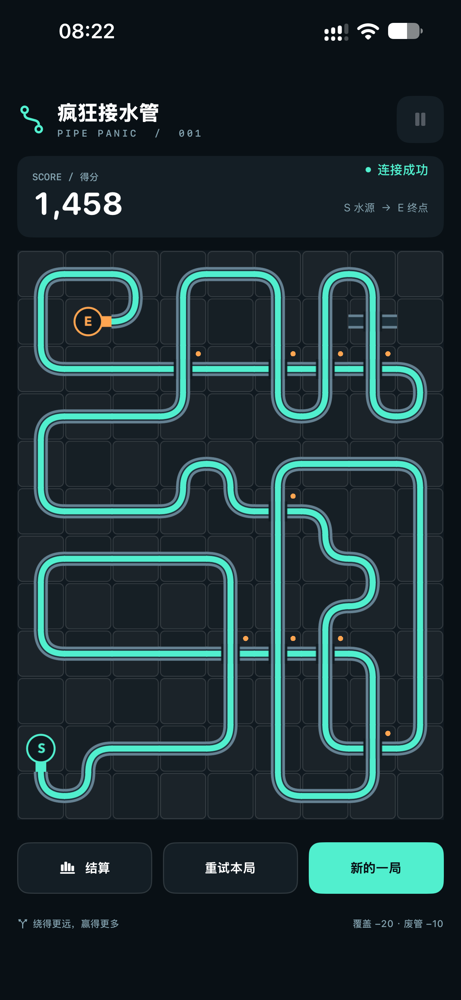

Find your flow.
Follow 120 levels with changing goals, chapter colors and tool unlocks. Learn a trick, then find a new use for it.
A LITTLE PLANNING. ONE MORE TURN.
A pipe puzzle about planning ahead — and knowing when to take one more turn. Build your route before the water catches up.
In TestFlight testing · iPhone & iPad

THE ART OF THE DETOUR
Reaching the outlet is one way to win. Taking the scenic route is how you chase a higher score. Every piece is a choice between a safe connection and a little more ambition.
Follow 120 levels with changing goals, chapter colors and tool unlocks. Learn a trick, then find a new use for it.
Take on a 20-stage run, then continue into Endless. Choose up to three tools and keep building under growing pressure.
Choose a 12×12, 16×16 or 20×20 board. Pan across the grid and explore a new route at your own pace.
LESS NOISE. MORE FLOW.
A quiet, dark canvas. Mint-green water. Warm orange endpoints. The Classic Lines theme keeps your route in focus.
Current iPhone interface · Chinese shown. The game also supports Traditional Chinese, English, Japanese and Korean.


Progress through the journey to unlock tools and Challenge, or choose the optional one-time Full Unlock purchase for Challenge and all tools in the current version. Your level progress stays yours to earn.
No subscription. The local price is shown in the app. Core play works offline; iCloud, Game Center and purchases require an internet connection.
Pipe Panic is currently in TestFlight testing. App Store availability will be announced here.